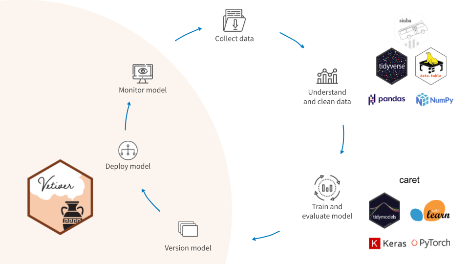

library(vetiver)
cars_lm <- lm(mpg ~ ., data = mtcars)
vetiver_model(cars_lm, "cars_linear")
── cars_linear ─ <butchered_lm> model for deployment
An OLS linear regression model using 10 featuresMachine learning operations, or MLOps, is a set of practices to deploy and maintain machine learning models in production reliably and efficiently. The vetiver framework is for MLOps tasks in Python and R.
Vetiver, the oil of tranquility, is used as a stabilizing ingredient in perfumery to preserve more volatile fragrances.
The goal of vetiver is to provide fluent tooling to version, deploy, and monitor a trained model. Functions handle both recording and checking the model’s input data prototype, and predicting from a remote API endpoint.

Use vetiver to version and deploy your trained models.
from vetiver import VetiverModel
from vetiver.data import mtcars
from sklearn.linear_model import LinearRegression
model = LinearRegression().fit(mtcars.drop(columns="mpg"), mtcars["mpg"])
v = VetiverModel(model, model_name = "cars_linear",
prototype_data = mtcars.drop(columns="mpg"))
v.description'A scikit-learn LinearRegression model'